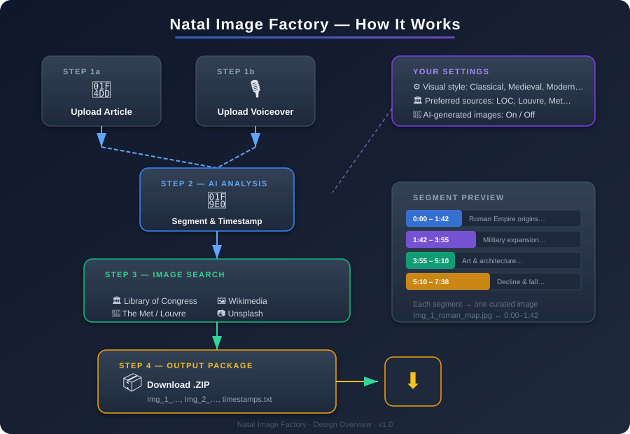

Design Overview — Prepared for Client Review · v1.0
Natal Image Factory is a web application designed for writers and podcasters who want to turn their written articles and voiceover recordings into visually rich videos — without the tedious work of manually searching for images and aligning them to audio.
You upload your article text and your voiceover audio. The application does the rest: it breaks your narration into natural thematic segments, finds compelling public-domain images for each segment, and delivers a neatly packaged download ready for your video editor.

Paste or upload the written text — plain text, Markdown, or Word documents are all accepted.
Upload the recorded narration in MP3, WAV, or any common audio format.
The application uses AI to read your article and analyze your voiceover. It divides the narration into semantic segments — natural topic boundaries where the subject shifts (e.g., from "the founding of Rome" to "military campaigns"). Each segment gets a precise start and end timestamp.
Think of it as the application creating an outline of your narration, with each bullet point getting its own illustration.
For each segment, the application searches trusted public-domain and open-license image collections for a single well-matched illustration:
| Source | What You'll Find |
|---|---|
| Library of Congress | Historic photographs, maps, posters, prints |
| Wikimedia Commons | Paintings, diagrams, charts, lithographs |
| The Metropolitan Museum of Art | Classical and fine-art imagery |
| The Louvre (Collections) | European paintings and antiquities |
| Smithsonian Open Access | Science, history, and culture imagery |
| Unsplash | High-quality modern photography |
| Europeana | European cultural heritage |
| AI Generation (optional) | Custom illustrations when no suitable public-domain image exists |
You can add or prioritize your own preferred sources in settings. The application also maintains its own curated default list that evolves over time.
The application delivers a single .zip file containing numbered images and a timestamps reference file.
You simply drag the images into your video timeline at the indicated timestamps. Done.
Choose a visual tone that matches your content:
| Style | Description |
|---|---|
| Classical Antiquity | Greco-Roman art, marble sculptures, ancient maps |
| Medieval | Illuminated manuscripts, tapestries, woodcuts |
| Renaissance | Oil paintings, anatomical sketches, cartography |
| Modern / Contemporary | Photography, clean diagrams, infographics |
| AI Judgement | Let the application choose the best fit per segment automatically |
Add your favorite museums, archives, or libraries. The application will prioritize these when searching, while still falling back on its full curated list if needed.
Toggle this on or off. When enabled, if the application cannot find a strong public-domain match for a particular segment, it will generate a custom illustration using AI image generation, styled to match your chosen visual tone.
No more manually Googling images, checking licenses, and renaming files.
All images are public-domain or open-license. AI images are original works.
AI reads your content and understands themes — not just keyword matching.
Simple image files + text file. Premiere, Final Cut, DaVinci, CapCut — anything.
Choose the visual era, the sources, and whether to use AI art.
Cloud-hosted, browser-based. No software to install.
The application is designed to run in the cloud (initially on DigitalOcean), so you access it through your web browser — no software to install. It is built to be portable, meaning it can be moved to any hosting provider in the future without rework.
If anything in this document is unclear, or if you'd like to add, remove, or change any feature, now is the perfect time. This design is shaped around your workflow — your feedback makes it better.